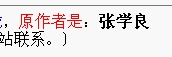

#2 Re:五子棋的未来 需要五子棋爱好者中出现企业家 作者：小丸.net 发表时间：2009-12-9 15:00:20

［ 茗弈小刀 于 2009-12-10 10:12:54 时花20金币送鲜花一朵］
#3 Re:五子棋的未来 需要五子棋爱好者中出现企业家 作者：茗弈妙手 发表时间：2009-12-9 15:05:10
同楼上。。。
#4 Re:五子棋的未来 需要五子棋爱好者中出现企业家 作者：不知取何名 发表时间：2009-12-9 15:32:55
同楼上。。。
#5 Re:五子棋的未来 需要五子棋爱好者中出现企业家 作者：儒释道 发表时间：2009-12-9 16:02:31

另外：根据中国的直销法，公务员是不能做直销的，张铁良是教师，也是公务员，这么明目张胆
#6 Re:五子棋的未来 需要五子棋爱好者中出现企业家 作者：白衣神童小剑魔 发表时间：2009-12-9 17:51:11
张学良
#7 Re:五子棋的未来 需要五子棋爱好者中出现企业家 作者：极地剑客 发表时间：2009-12-9 18:07:11
将军复活了吗~
#8 Re:Re:五子棋的未来 需要五子棋爱好者中出现企业家 作者：聂淼 发表时间：2009-12-9 18:25:55
将军没有死，他只是改下五子棋了
［ 失落刀 于 2009-12-11 8:29:07 时花20金币送鲜花一朵］
#9 Re:五子棋的未来 需要五子棋爱好者中出现企业家 作者：齐羽 发表时间：2009-12-9 18:30:34
我就是做生意的，也很喜欢五子棋。可就是没人教我……我讨厌中国所谓的大师，高高在上还有很大的臭脾气。我不屑！吴C不也是自学成才的嘛。讨厌你们设的门槛！！

#10 Re:Re:五子棋的未来 需要五子棋爱好者中出现企业家 作者：闫荣辉 发表时间：2009-12-9 21:52:17
引用：年青人加油。
原文由 齐羽 发表于 2009-12-9 18:30:34 :
我就是做生意的，也很喜欢五子棋。可就是没人教我……我讨厌中国所谓的大师，高高在上还有很大的臭脾气。我不屑！吴C不也是自学成才的嘛。讨厌你们设的门槛！！
#11 Re:Re:Re:五子棋的未来 需要五子棋爱好者中出现企业家 作者：齐羽 发表时间：2009-12-9 22:19:58
引用：谢谢！！我很想找个老师!
原文由 闫荣辉 发表于 2009-12-9 21:52:17 :引用：年青人加油。
原文由 齐羽 发表于 2009-12-9 18:30:34 :
我就是做生意的，也很喜欢五子棋。可就是没人教我……我讨厌中国所谓的大师，高高在上还有很大的臭脾气。我不屑！吴C不也是自学成才的嘛。讨厌你们设的门槛！！
#12 Re:五子棋的未来 需要五子棋爱好者中出现企业家 作者：儒释道 发表时间：2009-12-9 23:06:37
楼上的似乎是，拜师遇到问题。如果你真诚发出拜师请求，还是有人愿意的。自己努力也是重要的。
另外，此贴主题似乎是 要爱好者中产生企业家，不是在企业家中产生爱好者。
#13 Re:五子棋的未来 需要五子棋爱好者中出现企业家 作者：水月 发表时间：2009-12-10 16:51:02
张铁良同学想说啥。。。。
#14 Re:五子棋的未来 需要五子棋爱好者中出现企业家 作者：耳痛 发表时间：2009-12-14 4:14:24
张同学想发展下线？
开下玩笑
直销的商业模式在中国容易歧态发展。